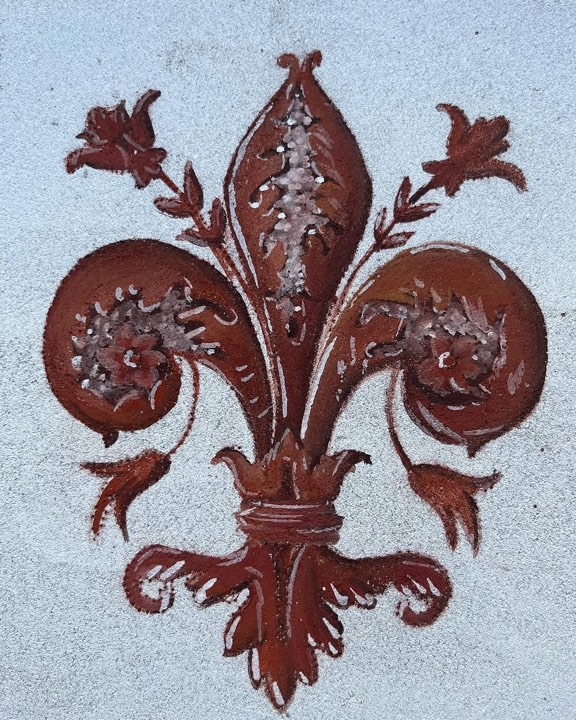

About
Hi, I'm Aqsa.
I'm a first-year MD student at Stanford University School of Medicine. I studied bioengineering at the University of Pittsburgh, and I've been a volunteer EMT with Edison EMS since 2022. I go by aqsamakesthings online, which is a fair summary. My strengths are rapid, low-resolution prototyping and quick experiments designed to break an idea early.
The path so far
I spent my formative years between India and the United States. In India, healthcare often felt like a privilege. When I moved to the U.S., I was struck by how extensive the medical infrastructure was. Shadowing physicians, volunteering in hospitals, and working as an EMT later taught me that even the most advanced health system is broken if it fails the people who are most vulnerable.
I went to a magnet high school focused on biomedical sciences and healthcare delivery. I've always loved tinkering with my hands, which led me to bioengineering and, on the side, to mixed-media art.
Working as an EMT is where I fell in love with clinical care. It showed me how much of medicine is about showing up, listening, and being present.
At Pitt, I followed that thread in several directions at once. Many of my engineering projects began with a clinician: Dr. Natan Cramer in pediatric emergency medicine and Dr. Trent Emerick in spinal cord stimulation. I also worked in industry at Medtronic, did research in the Knight Lab and, starting in high school, in Stevens Institute of Technology's MOCORE Lab, and helped commercialize medical devices at Pitt's IDEA Lab. Alongside that, I co-founded a campus menstrual equity initiative, volunteered with older patients at UPMC Shadyside, and interned for the chair of the Pennsylvania House Health Committee.
The project that changed how I think about innovation was a wearable vibration device for phantom limb pain. I could design a technically functional prototype. But conversations about insurance denials and treatment costs showed me that even the most innovative solution is meaningless if it's inaccessible or poorly integrated into a patient's life. Since then, I've believed that transformative, sustainable change begins with understanding community needs and individual experiences.
I see clinical academic medicine as the place where all of these interests come together. At Stanford, I want to pursue the AI and Computational Biomedicine scholarly concentration to learn how to apply the principles of engineering to healthcare to create more equitable technologies. Digital tools can extend care beyond episodic clinical visits, generate continuous insights, and expand access, but only when they respond to a validated need and account for the patients, clinicians, and systems that will use them. I've learned how to prototype and iterate. Now I want to learn to judge not only whether a solution can be built, but whether it should be, how it can improve care, and what responsible adoption requires, from user experience and regulatory strategy to reimbursement, implementation, and sustainable business models.
Ultimately, I hope to become a physician-innovator who uses technology not simply to treat disease, but to restore agency, dignity, and access to care.
Learning abroad
Cyprus
In Cyprus, I met with local business leaders, government officials, healthcare providers, and students to deepen my understanding of the social determinants of health. At Medochemie, one of the region's largest drug manufacturers, I explored how blockchain could make supply chains more transparent and traceable. Those visits showed me how logistics, regulation, and infrastructure shape health. Treating patients means understanding the full context of their lives, from the systems that deliver their medicines to the histories that shape their communities.
The biggest lesson came unexpectedly. Gelato cross-contaminated with hazelnuts, an allergen I didn't know I had, sent me into anaphylaxis. There was no ambulance to call, so we waited half an hour for a taxi to the emergency room. For the first time, I was on the receiving end of care, surrounded by providers who didn't speak my language and unsure whether my insurance would be accepted. It made me think hard about the patients I serve, especially those who don't speak English, and how frightening it must be not to be understood in a crisis.
After that, every lecture and site visit took on new meaning. Even in Lefkara, a remote village in the Troodos Mountains, I found myself wondering how a resident would get time-sensitive care after a stroke. Cyprus shifted how I see healthcare, from a rigid system to a lived experience, and made me more committed to culturally competent, accessible care.
Supported by the Ruth Crawford Mitchell, Frederick Honors, and Swanson School of Engineering Global Studies scholarships. I also presented a poster, The Sun Rises in Cyprus, at Pitt's Nationality Rooms & Intercultural Exchange Programs Showcase.
Watch my study abroad video on YouTube
Florence, Italy
From studying Brunelleschi's dome to building Leonardo da Vinci's bridge, I explored Renaissance approaches to open-ended problem solving and applied them to modern healthcare challenges. I developed a digital twin of Florence to optimize ambulance routing and improve emergency response. The project deepened my interest in designing sustainable, context-aware medical systems that balance technical innovation with cultural nuance.
Florentine artists' use of anatomical study, perspective, and stiacciato relief reminded me how art captures the human condition. Studying art history also reignited my love for drawing and painting. See some of what I make.

How I work
Innovation is more than devices. I think of innovation as building diagnostic and therapeutic tools, and also as reimagining how healthcare is delivered. That's why my work ranges from silicone ultrasound simulators to a proposal for reusable pulse oximeters at UPMC Children's Hospital, to draft legislation on nurse aide retention.
Start with the people. Whether I'm designing a valve or a campus program, I begin with ethnography: observation, surveys, focus groups, and conversations with the people closest to the problem.
Low-resolution first. I'll build a one-way valve from two syringes, or a breakaway joint from foam core, before opening CAD. Then I do the structured side: specifications, risk analysis, and verification and validation plans tied to standards like ISO 80369-20 and ASTM D543.
Change course when the evidence says so. When our PhilaeTube check valve failed to stop backflow, I proposed a new mechanism before the design freeze. When our menstrual equity pilot came back with feedback, we adapted it before expanding it campus-wide.
Lead by stewarding, not directing. A week into leading an XProject, our mentor revised the project plan. I talked with him and each teammate, redistributed tasks so they built on work already done, and defined clear deliverables with him. Then I set up a roadmap with milestones and a weekly design review. For me, leadership means guiding people through uncertainty with empathy and decisiveness.
Elevate voices instead of speaking for people. When I advocate for someone, my aim is to make room for them to be heard, not to talk on their behalf.
Selected honors
- Finalist, Omicron Delta Kappa Senior of the Year (2026)
- Chancellor's Undergraduate Teaching Fellow (2025)
- 3rd place, Medtronic Hackathon (2025)
- Pittsburgh representative, Emory University Morningside Global Health Case Competition (2025)
- Finalist, Richard W. Vomacka Student Speaker Competition (2025)
- Finalist, Big Idea Center Innovation Competition (2024, 2025); Best Video Submission (2025)
- Winner, Kuzneski Innovation Cup Speed Round (2023)
- Alumni-Farrukh H. Ali Scholar (2025); Ruth Crawford Mitchell Scholarship (2023); Dietrich Foundation Endowment Fund Scholarship (2022–2025)
Certifications
- EMT-B: National Registry of EMTs, New Jersey, and Pennsylvania
- CPR Instructor and BLS for Healthcare Providers, American Heart Association
Languages
Bilingual in Hindi · Spanish (conversational)
Education
- 2026 – 2030Doctor of Medicine, Stanford University School of Medicine
MD student, expected 2030.
- 2022 – 2026B.S. in Bioengineering, summa cum laude, University of Pittsburgh
Concentration in cellular engineering · Minor in chemistry · Certificate in global health · Frederick Honors College
- May 2025Engineering Perspectives of the Renaissance and Sustainability, CEA CAPA · Florence, Italy
- May 2023Global Supply Chain Management, University of Nicosia · Cyprus
- 2018 – 2022Middlesex County Academy for Allied Health & Biomedical Sciences · New Jersey
Salutatorian